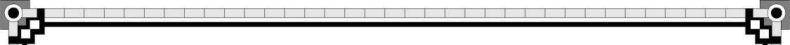

632 PAGES—illustrated—cloth bound, 60 cents, postpaid or delivered by colporteurs. magazin edition (eng. and ger.) 10 cents postpaid.
International Bible Students Association
Brooklyn, N. Y.
THIS MARVELOUS LIBRARY
NOW YOURS FOR A TRIFLE
“STUDIES IN THE SCRIPTURES”
The Exhaustive and Celebrated Works of
PASTOR RUSSELL
Complete in Seven eBook Bound Volumes
BIG REDUCTION OFFER
The ENTIRE SET of SEVEN VOLUMES now digitized in PDF format
In the English translation this is frequently, though improperly, called the "holy place," and in such instances the word place will he found in italics, indicating that it has been supplied by the translators, as, for instance, in Exod. 26:33. This error is quite confusing, as the "Court" was properly called the "holy place." When place is not in italics, the "Court" is always meant. See Lev. 14:13 and 6:27. In some instances the "Holy" is termed the "Tabernacle of the congregation."
The "Most Holy," or "Sanctuary," is also sometimes called the "Holy place” —place in italics. Instances, Lev. 16:17, 20, 23. In referring to these apartments, we will call them, severally, the "Court," "The Holy" and "The Most Holy."
A lack of appreciation of the interest of Christians in these typical pictures and of the necessity for uniform exactness, on the part of the translators of Leviticus, must have been the cause of the varied translations which have so aided in confusing the student.
The word spiritual in this text is omitted by the oldest Greek MS., the Sinaitic, with evident propriety. Not spiritual but human rights, privileges, life, etc., are sacrificed.
Scripture Studies, Series 1, Study 10, and Series 2, p. 126. 52
As we come more clearly to realize the high attainment of character required of all who will ever be accorded everlasting life on any plane, and how very few seem to make any serious profession of or attempt at perfect love as a governing principle in their lives, we are led to wonder if the two sons of Aaron who were destroyed by the Lord were not intended to typify the large proportion of consecrated and spirit-begotten ones who have failed to reach the high standard of heart necessary, and who will consequently not be worthy of any life, but will, on the contrary, sink into oblivion — the Second Death.
Scripture Studies, Series 1, Study 5.
By some means the translators of the Common version Bible mistranslated hilasterion "propitiation." The world hilasmos, signifying satisfaction, is properly translated "propitiation" in 1 John 2:2 and 4:10.